1. Introduction
1.1 Qu'est-ce que FizziQ ?
FizziQ transforme votre smartphone ou tablette en un véritable laboratoire scientifique portable. L'application exploite les nombreux capteurs intégrés dans votre appareil pour réaliser des expériences de physique, chimie et sciences de la vie et de la Terre.
1.2 À qui s'adresse FizziQ ?
- Élèves : du collège au lycée, pour découvrir les sciences de manière interactive
- Enseignants : pour préparer et animer des séances de travaux pratiques
- Curieux : pour explorer le monde qui nous entoure avec un regard scientifique
1.3 Philosophie de l'application
FizziQ s'inspire de la démarche scientifique :
Observer
Utiliser les capteurs pour mesurer des phénomènes
Questionner
Formuler des hypothèses
Expérimenter
Enregistrer des données
Analyser
Interpréter les résultats
Communiquer
Partager ses découvertes
1.4 Langues disponibles
FizziQ est disponible en 20 langues : français, anglais, espagnol, portugais, allemand, italien, néerlandais, suédois, norvégien, danois, finnois, hongrois, estonien, roumain, ukrainien, russe, turc, arabe et malgache.
1.5 Précautions d'utilisation
L'utilisation de FizziQ pour réaliser des expériences scientifiques nécessite de respecter certaines précautions essentielles.
Protégez votre appareil
- Utilisez une coque de protection adaptée
- Ne pas exposer l'appareil à des liquides ou des températures extrêmes
- Fixez solidement l'appareil lors des expériences de mouvement
- Ne pas soumettre l'appareil à des chocs violents
Protégez les autres
- Ne lancez pas d'objets en direction d'autres personnes
- Prévenez les personnes autour de vous avant de réaliser une expérience de mouvement
- Dégagez l'espace de travail des obstacles
Protégez-vous
- N'effectuez pas de mesures dans des lieux dangereux (bord de route, hauteur, etc.)
- Ne réalisez pas d'expériences qui pourraient vous blesser
- Restez attentif à votre environnement pendant les mesures
1.6 Recommandations pour utiliser FizziQ en classe
1. Soyez confiant
L'application FizziQ a été conçue pour les élèves, et son ergonomie est similaire à celle des autres outils numériques qu'ils utilisent quotidiennement.
2. Mettez les appareils en mode avion
FizziQ n'a pas besoin d'accès à Internet pour fonctionner. En mode avion, les élèves ne seront pas distraits par les notifications et messages.
3. Encouragez le travail de groupe
Le travail de groupe permet aux élèves moins familiarisés avec les outils numériques de s'approprier l'application tout en bénéficiant des découvertes des autres.
4. Laissez les élèves se familiariser avec l'outil
Lors de la première séance, prévoyez 10 à 15 minutes pour que les élèves se familiarisent avec les différentes fonctionnalités.
5. Choisissez un protocole adapté
Pour votre première séance, choisissez un protocole qui ne nécessite qu'un seul instrument de mesure. Vous trouverez de nombreux exemples sur www.fizziq.org/protocoles.
6. Demandez un compte-rendu
FizziQ permet aux élèves de créer facilement des documents synthétiques incluant des graphiques, du texte, des photos et des tableaux.
2. Prise en main
2.1 Installation
FizziQ est disponible gratuitement sur :
- iOS : App Store (iPhone et iPad)
- Android : Google Play Store
- Web : FizziQ Web (version navigateur)
2.2 Premier lancement
Au premier lancement, FizziQ :
- Détecte automatiquement les capteurs disponibles sur votre appareil
- Demande les autorisations nécessaires (microphone, caméra, localisation)
- Affiche l'écran d'accueil
2.3 Autorisations requises
| Autorisation | Utilisation |
|---|---|
| Microphone | Sonomètre, analyseur de fréquence, amplitude (oscilloscope) |
| Caméra | Colorimètre, photos, analyse cinématique |
| Localisation | GPS (latitude, longitude, altitude, vitesse) |
| Stockage | Sauvegarde des cahiers et export |
| Bluetooth | Connexion aux capteurs FizziQ Connect |
2.4 Structure de l'écran d'accueil
L'écran d'accueil présente cinq onglets en bas de l'écran :


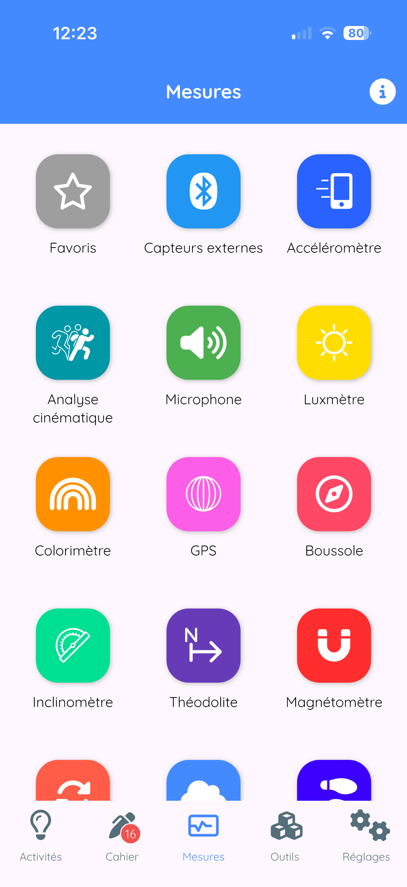
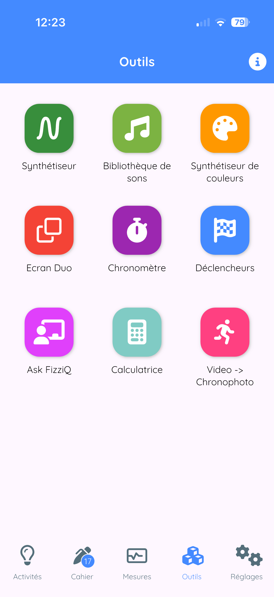
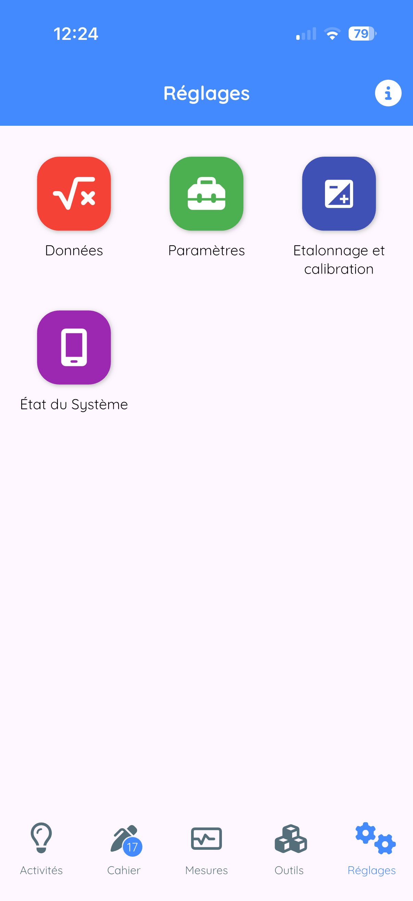
| Onglet | Description |
|---|---|
| Activités | Protocoles expérimentaux et ressources pédagogiques |
| Cahier | Consultation et gestion de vos observations |
| Mesures | Accès aux capteurs et outils de mesure |
| Outils | Synthétiseur, bibliothèque, calculatrice, etc. |
| Réglages | Paramètres et configuration |
3. L'interface principale
3.1 L'onglet Mesure
C'est le cœur de FizziQ. Cet écran permet de :
- Sélectionner un ou deux instruments de mesure
- Visualiser les données en temps réel
- Enregistrer des observations
Sélection d'un instrument
- En haut de l'écran, vous voyez le nom de l'instrument actif
- Appuyez sur ce nom : le menu des instruments s'ouvre
- Le menu affiche les catégories d'instruments
- Appuyez sur une catégorie pour la déplier
- Appuyez sur l'instrument souhaité pour le sélectionner
- Le menu se ferme et l'affichage se met à jour
- La couleur de l'interface change selon l'instrument
3.2 L'onglet Cahier
Le cahier d'expériences contient toutes vos observations, présentées sous forme de cartes d'observation. Chaque carte peut contenir :
- Des données (graphiques enregistrés par les capteurs)
- Des tableaux de données
- Des photos et images
- Des notes et commentaires textuels
Navigation dans le cahier
- Faire défiler : glissez verticalement pour parcourir les cartes
- Sélectionner : appuyez sur une carte pour la voir en détail
- Réorganiser : maintenez appuyé puis faites glisser
- Supprimer : balayez vers la gauche ou utilisez le menu
3.3 L'onglet Outils
Accès aux outils complémentaires :
- Synthétiseur de sons
- Synthèse des couleurs
- Bibliothèque de sons
- Calculatrice scientifique
- Chronomètres automatiques
- Déclencheurs
- AskFizziQ (assistant IA)
3.4 L'onglet Activités
- Téléchargement d'activités pédagogiques
- Lecture de QR codes de configuration
- Accès à la base de ressources
3.5 L'onglet Réglages
L'onglet Réglages permet de personnaliser le comportement de l'application :
- Données : fréquence d'échantillonnage, filtrage du signal, ajustement quadratique
- Paramètres : orientation de l'écran, organisation des capteurs (par instrument ou par thème), langue
- Caméra : LED pour colorimétrie, sauvegarde des photos, choix de la caméra
- Calibration : réglage du magnétomètre et du sonomètre
- État du système : capteurs disponibles, version de l'application, informations sur l'appareil
4. Les instruments de mesure
FizziQ propose plus de 50 instruments de mesure. Le menu peut être organisé par instrument ou par thème.
4.1 Organisation du menu des instruments
Organisation par défaut : par instrument de mesure
| Catégorie | Description |
|---|---|
| Capteurs externes | Capteurs Bluetooth FizziQ Connect |
| Accéléromètre | Mesures d'accélération (linéaire, avec g, absolue) |
| Analyse cinématique | Vidéo et chronophotographie |
| Microphone | Sonomètre, fréquence, amplitude, spectrographe |
| Luxmètre | Mesure de l'éclairement lumineux |
| Colorimètre | Analyse des couleurs (RGB, HSL, nom) |
| GPS | Position, altitude, vitesse |
| Boussole | Direction par rapport au nord magnétique |
| Inclinomètre | Angles d'inclinaison |
| Théodolite | Relèvements horizontaux et verticaux |
| Magnétomètre | Champ magnétique |
| Gyroscope | Vitesse de rotation |
| Baromètre | Pression atmosphérique |
| Podomètre | Compteur de pas |
Organisation alternative : par thème
Dans Réglages > Organiser par thème, vous pouvez activer une organisation thématique :
| Thème | Instruments inclus |
|---|---|
| Analyse cinématique | Vidéo, chronophotographie |
| Son | Sonomètre, fréquence, amplitude, spectrographe |
| Mouvement | Accéléromètre, gyroscope, podomètre |
| Lumière | Luxmètre, colorimètre |
| Position | GPS (latitude, longitude, altitude, vitesse) |
| Orientation | Boussole, inclinomètre, théodolite |
| Magnétisme | Magnétomètre |
| Environnement | Baromètre |
4.2 Microphone
Le microphone du smartphone permet plusieurs types de mesures acoustiques.
Sonomètre
- Mesure : Niveau sonore en décibels (dB)
- Plage : 0 à 110 dB
- Utilisation : Mesurer le volume sonore d'un environnement
- Exemples : Pollution sonore, isolation acoustique, comparaison de sons
Fréquence dominante
- Mesure : Fréquence principale du son en Hertz (Hz)
- Plage : 50 à 10 000 Hz
- Utilisation : Identifier la note jouée par un instrument
- Exemples : Accorder un instrument, étudier la voix humaine
Amplitude (vue oscilloscope)
- Affichage : Signal audio en temps réel (forme d'onde)
- Plage : 0 à 10 000 ms ou 0 à 100 ms (commutable)
- Utilisation : Visualiser la forme d'onde sonore
- Exemples : Comparer sons purs et sons complexes, observer les battements
Spectrographe
- Affichage : Spectre fréquentiel du son (FFT)
- Plage : 0 à 5 000 Hz
- Utilisation : Analyser la composition harmonique
- Exemples : Timbre des instruments, analyse de la voix
Niveau de bruit
- Mesure : Moyenne du niveau sonore ambiant (dB)
- Plage : 0 à 110 dB
- Utilisation : Mesurer le bruit ambiant moyen dans un environnement
4.3 Accéléromètre
L'accéléromètre mesure les accélérations subies par le téléphone.
Accéléromètre linéaire X, Y, Z
- Mesure : Accélération sans gravité (m/s²)
- Axes : X (avant-arrière), Y (gauche-droite), Z (haut-bas)
- Exemples : Chute libre, oscillations, chocs
Accéléromètre avec gravité
- Mesure : Accélération totale incluant g (m/s²)
- Valeur au repos : ≈ 9,81 m/s² (verticalement)
Accélération absolue X, Y, Z
- Mesure : Accélération dans le référentiel terrestre (m/s²)
- Différence : Indépendant de l'orientation du téléphone
4.4 Gyroscope
- Mesure : Vitesse de rotation (°/s ou rad/s)
- Axes : X (roulis), Y (tangage), Z (lacet)
- Exemples : Rotation d'une toupie, mouvement pendulaire
4.5 Podomètre
- Mesure : Nombre de pas cumulés
- Exemples : Étude de la foulée, calcul de distance parcourue
4.6 Boussole
- Mesure : Direction par rapport au nord magnétique (°)
- Plage : 0° à 360°
- Note : Tenir le téléphone horizontalement pour une mesure précise
4.7 Inclinomètre
Inclinomètre avant-arrière (tangage)
- Mesure : Angle d'inclinaison longitudinale (°)
- Plage : -90° à +90°
Inclinomètre latéral (roulis)
- Mesure : Angle d'inclinaison transversale (°)
- Plage : -90° à +90°
4.8 Théodolite
Relèvement horizontal (Azimut)
- Mesure : Direction d'un objet par rapport au nord (°)
- Plage : 0° à 360°
Relèvement vertical (Élévation)
- Mesure : Angle au-dessus ou en-dessous de l'horizon (°)
- Plage : -90° (nadir) à +90° (zénith)
4.9 GPS
| Mesure | Description |
|---|---|
| Latitude | Position nord-sud (-90° à +90°) |
| Longitude | Position est-ouest (-180° à +180°) |
| Altitude | Hauteur par rapport au niveau de la mer (m) |
| Vitesse GPS | Vitesse de déplacement (m/s ou km/h) |
| Précision GPS | Incertitude de la position (m) |
4.10 Magnétomètre
- Magnétomètre (norme) : Intensité totale du champ magnétique (µT)
- Valeur terrestre : ≈ 25 à 65 µT selon la localisation
- Magnétomètre X, Y, Z : Composantes du champ magnétique
- Angle magnétique : Direction du champ magnétique horizontal
4.11 Luxmètre
- Mesure : Éclairement en lux
- Plage : 0 à 100 000+ lux
| Situation | Éclairement typique |
|---|---|
| Nuit sans lune | 0,001 lux |
| Pleine lune | 0,25 lux |
| Éclairage intérieur | 300-500 lux |
| Jour nuageux | 10 000 lux |
| Plein soleil | 100 000 lux |
4.12 Colorimètre
Le colorimètre utilise la caméra pour analyser les couleurs.
| Mesure | Description |
|---|---|
| Couleur (nom) | Nom de la couleur détectée |
| Teinte (H) | Position sur le cercle chromatique (0° à 360°) |
| Saturation (S) | Pureté de la couleur (0% à 100%) |
| Luminosité (L) | Clarté de la couleur (0% à 100%) |
| Intensité R, G, B | Composantes rouge, vert, bleu (0-255) |
| Absorbance | Absorbance optique (spectrophotométrie) |
4.13 Baromètre
- Mesure : Pression en hectopascals (hPa) ou millibars
- Valeur standard : 1013,25 hPa au niveau de la mer
- Variation : ≈ -12 hPa par 100 m d'altitude
- Note : Disponible uniquement sur certains appareils
4.14 Analyse cinématique
Cinématique vidéo
- Fonction : Analyser le mouvement dans une vidéo
- Mesures : Position (x, y), vitesse, accélération
Chronophotographie
- Fonction : Analyser le mouvement dans une photo
- Mesures : Position (x, y), Vitesse (Vx, Vy, V), Accélération (Ax, Ay, A), Rotation (α), Énergie (Ec, Ep, Em)
5. Affichage des mesures - Premiers pas
5.1 Accéder à l'écran de mesure
Depuis l'écran d'accueil
- Regardez le bandeau inférieur de l'écran
- Appuyez sur l'onglet Mesure
- Le menu des instruments s'affiche
Sélectionner un instrument
- Appuyez sur une catégorie (ex: Accéléromètre)
- La catégorie se déplie et affiche les instruments disponibles
- Appuyez sur l'instrument souhaité (ex: Accélération X)
- L'écran de mesure s'affiche
5.2 L'écran de mesure
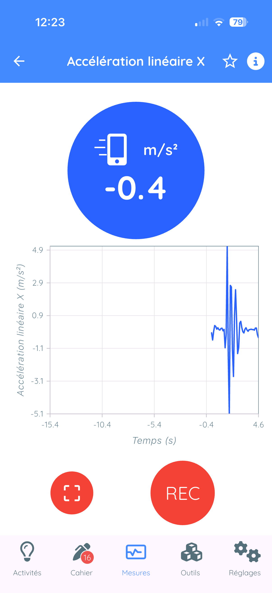
Les éléments de l'écran
1. Barre supérieure
- Flèche retour ← : revenir au menu des instruments
- Nom de l'instrument : indique l'instrument actif
2. Cadran circulaire (affichage principal)
- Valeur numérique : la mesure en temps réel
- Unité : l'unité de mesure
- La valeur se met à jour en permanence
3. Graphique temps réel
- Affiche l'évolution de la mesure au cours du temps
- Le graphique défile de droite à gauche
4. Boutons d'action (en bas)
- Bouton capture ⊡ : capturer une mesure instantanée
- Bouton REC 🔴 : démarrer un enregistrement continu
5.3 Exemple pratique : mesurer l'accélération
Étape 1 : Sélectionner l'accéléromètre
- Appuyez sur l'onglet Mesure
- Appuyez sur Accéléromètre
- Appuyez sur Accélération X
Étape 2 : Observer l'écran de mesure
- Le cadran affiche une valeur proche de 0 m/s² si le téléphone est immobile
- Le graphique montre une ligne plate
Étape 3 : Faire une mesure
- Agitez doucement le téléphone de gauche à droite
- Observez le cadran : la valeur change
- Observez le graphique : une courbe ondulée apparaît
5.4 Changer d'instrument
Depuis l'écran de mesure, plusieurs méthodes :
- Méthode 1 : Flèche retour ← en haut à gauche
- Méthode 2 : Appuyer sur le cadran circulaire
- Méthode 3 : Appuyer sur le graphique
6. Enregistrer des mesures
6.1 Types d'enregistrement
| Mode | Description | Résultat |
|---|---|---|
| Continu | Enregistre les données en fonction du temps | Graphique dans le cahier |
| Instantané | Capture une seule valeur | Carte "spot" avec la valeur |
| Double capteur | Enregistre deux grandeurs simultanément | Graphique X-Y |
6.2 Enregistrement continu
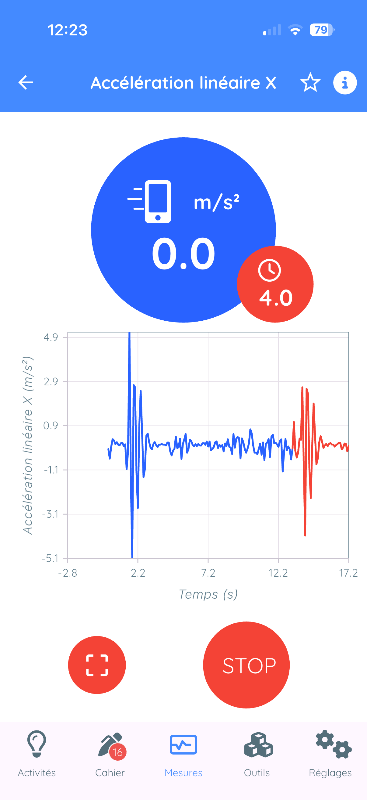
Procédure d'enregistrement
- Vérifiez que l'instrument souhaité est affiché
- Repérez le bouton rouge "REC" en bas de l'écran
- Appuyez sur "REC" pour démarrer l'enregistrement
- Le graphique passe en rouge, une horloge s'affiche
- Effectuez votre expérience pendant l'enregistrement
- Appuyez sur "STOP" pour arrêter
- L'observation est automatiquement ajoutée au cahier
6.3 Mesure instantanée (capture spot)
- Vérifiez que l'instrument souhaité est affiché
- Observez la valeur affichée dans le cadran
- Attendez que la valeur se stabilise
- Appuyez sur le bouton de capture ⊡
- Une carte d'observation instantanée est ajoutée au cahier
6.4 Mode double capteur (Duo)
Le mode Duo permet d'afficher et d'enregistrer deux instruments simultanément.
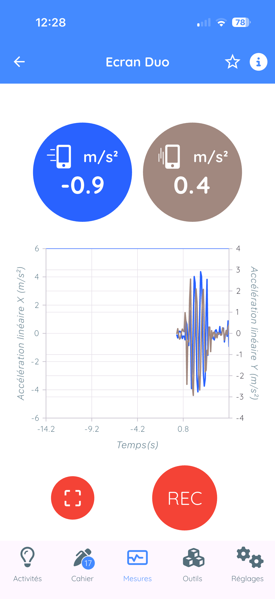
Activation du mode Duo
- Appuyez sur l'onglet Outils 🔧
- Appuyez sur Écran du haut
- Revenez à l'écran de mesure : deux cadrans s'affichent
- Appuyez sur le second cadran pour choisir le deuxième instrument
Exemples d'utilisation
- Trajectoire : Accélération X vs Accélération Y
- Cinématique : Position vs Temps
- Électricité : Tension vs Intensité (avec capteurs externes)
6.5 Chronomètres et déclencheurs automatiques
Ces outils sont accessibles depuis l'onglet Outils 🔧.
- Chronomètres : mesurer un temps entre deux événements
- Déclencheurs : déclencher une action quand une condition est remplie
6.6 Paramètres d'enregistrement
Fréquence d'échantillonnage
La fréquence d'échantillonnage standard correspond à la fréquence maximale pour le capteur sélectionné. Cette fréquence est paramétrable dans Réglages > Données.
| Capteur | Fréquence maximale |
|---|---|
| Microphone (oscilloscope) | Jusqu'à 40 000 Hz |
| Accéléromètre | 50-100 Hz |
| Gyroscope | 50-100 Hz |
| Colorimètre | 20-40 Hz |
| GPS | 1 Hz |
| Baromètre | 1 Hz |
Durée maximale d'enregistrement
- À 100 Hz : 5000 ÷ 100 = 50 secondes
- À 10 Hz : 5000 ÷ 10 = 500 secondes (≈ 8 minutes)
- À 1 Hz : 5000 ÷ 1 = 5000 secondes (≈ 83 minutes)
7. Le cahier d'expériences
7.1 Principe du cahier
Le cahier d'expériences fonctionne comme un journal de bord scientifique numérique. Il contient l'ensemble de vos observations sous forme de cartes d'observation.
Chaque carte peut contenir :
- Des données : graphiques enregistrés par les capteurs
- Des tableaux : données numériques organisées
- Des photos : images prises pendant l'expérience
- Du texte : notes, commentaires, hypothèses, conclusions
7.2 Types de cartes d'observation
| Type | Description |
|---|---|
| Graphique (simple) | Une grandeur en fonction du temps |
| Graphique (double) | Deux grandeurs, mode superposé ou X-Y |
| Instantanée (spot) | Valeur unique capturée |
| Texte | Zone de texte libre, formules LaTeX |
| Photo | Image avec possibilité de rotation |
| Tableau | Données avec formules automatiques |
| Tableur | Mini tableur intégré complet |
7.3 Manipulation des cartes
Renommer une carte
Il est très important de nommer les différentes cartes de façon explicite. Cela permet aux élèves de s'y retrouver facilement dans leur cahier d'expériences et de bien documenter leur séance d'expérimentation.
Comment renommer une carte
- Ouvrez la carte en plein écran
- Appuyez sur le titre de la carte
- Tapez le nouveau nom
- Validez
Réorganiser les cartes
- Appuyez sur l'icône réorganiser 🔀 en haut
- Maintenez appuyé sur une carte puis faites-la glisser
- Relâchez pour déposer
Supprimer une carte
- Méthode 1 : Balayez vers la gauche → bouton Supprimer
- Méthode 2 : Menu ⋮ → Supprimer
7.4 Ajouter des cartes d'observation

Il existe plusieurs façons d'ajouter des cartes d'observation à votre cahier :
Depuis l'écran de mesure
Revenez dans l'onglet Mesure et effectuez de nouvelles mesures. Celles-ci seront automatiquement ajoutées au cahier.
Depuis le bouton flottant +
Appuyez sur le bouton flottant + (carré) situé en bas à droite de la fenêtre du cahier. Ce bouton permet d'ajouter :
| Option | Description |
|---|---|
| Texte | Ajouter une carte de texte pour noter vos observations |
| Tableau | Créer un tableau de données |
| Appareil photo | Prendre une photo et l'ajouter au cahier |
| Pellicule | Ajouter une image depuis votre galerie photo |
| Observation | Importer une mesure via QR code depuis un autre appareil |
| Instrument | Revenir à l'écran de mesure pour effectuer une nouvelle mesure |
7.5 Exporter et partager les données d'une observation

Pour exporter les données d'une observation, ouvrez la carte en plein écran puis appuyez sur l'icône partager 📤.
| Option | Description |
|---|---|
| QR Code | Partage instantané entre smartphones, fonctionne sans Internet |
| CSV | Pour Excel, LibreOffice, Google Sheets |
| Python | Export pour analyse en Python |
| Image | Capture PNG pour insérer dans Word |
| Ajouter à un cahier | Copie vers un autre cahier |
7.6 Exporter et partager le cahier

Pour exporter le cahier dans son entier, appuyez sur l'icône partager 📤 située en haut à droite, dans le bandeau affichant le nom du cahier.
Options d'export
| Format | Description |
|---|---|
| Document formaté avec mise en page personnalisable | |
| CSV | Toutes les données au format tableur |
| Python | Export pour analyse en Python |
| Partager le cahier | Partage du fichier .fizziq complet |
Export PDF du cahier


Lors de l'export en PDF, FizziQ vous demande :
- Nom du cahier : titre qui apparaîtra sur le document
- Auteur : nom de l'auteur du document
- Nombre de colonnes : entre 1 et 3 colonnes par page
Une fois le PDF généré, vous pouvez le partager par tous les moyens disponibles sur votre smartphone : e-mail, WhatsApp, Messages, ou le sauvegarder dans le cloud (Google Drive, iCloud, Dropbox...).
7.7 Gestion des cahiers
- Renommer : Appuyez sur le nom du cahier en haut
- Accéder à tous les cahiers : Icône dossier 📁 en haut à gauche
- Créer un nouveau cahier : Icône + dans la liste
- Sauvegarde automatique : Les cahiers sont sauvegardés automatiquement
8. Données des capteurs
Les données des capteurs contiennent un grand nombre d'informations. Elles sont présentées sous forme de graphiques qui permettent une analyse visuelle rapide et efficace.
Les données peuvent également être exportées au format CSV ou Python pour une analyse approfondie dans un tableur ou un environnement de programmation.
L'affichage sous forme de graphique permet de visualiser facilement un grand nombre de données et d'identifier rapidement les tendances et les anomalies.
8.1 Analyse des graphiques
Mode d'affichage
Un bouton permet de sélectionner le mode d'affichage du graphique :
- Ligne : affichage classique de la courbe
- Statistiques : affiche les occurrences pour les différentes valeurs mesurées
Commandes en mode Ligne
| Bouton | Fonction |
|---|---|
| + / − | Zoomer / dézoomer sur l'échelle verticale |
| ↑ / ↓ | Recentrer le graphique verticalement |
| Double curseur (à droite) | Zoomer sur une partie du graphique sur l'axe du temps (abscisses) |
9. Les tableaux
9.1 Principe
FizziQ utilise un tableur scientifique adapté aux besoins de l'expérimentation. Différence principale avec Excel : les formules utilisent des noms de colonnes (t, x, y...) au lieu de références de cellules (A1, B2...).
9.2 Créer un tableau
- Onglet Cahier
- Appuyez sur +
- Sélectionnez Tableau
- Un tableau avec 3 colonnes par défaut est créé
Renommer une colonne
Appuyez sur le nom de la colonne. Pour ajouter une unité : t(s) → l'identifiant est "t".
Menu d'en-tête de colonne
| Option | Description |
|---|---|
| Indices séquentiels | Remplit avec 1, 2, 3, 4... |
| Définir les décimales | Nombre de décimales affichées |
| Copier dans la colonne | Copie une valeur dans toute la colonne |
| Supprimer | Supprime la colonne |
9.3 Formules et fonctions
Principe
- Les formules commencent par
= - Référencez une colonne par son nom (ex: B, t, x...)
- La formule utilise la valeur du même rang
Exemple
Pour calculer le sinus d'une colonne B : =SIN(B)
Fonctions de voisinage
| Fonction | Description |
|---|---|
PREC(col) ou PREV(col) | Valeur de la ligne précédente |
SUIV(col) ou NEXT(col) | Valeur de la ligne suivante |
Opérateurs mathématiques
| Opérateur | Signification |
|---|---|
+ | Addition |
- | Soustraction |
* | Multiplication |
/ | Division |
^ | Puissance |
Fonctions mathématiques
SIN, COS, TAN, ASIN, ACOS, ATAN, SQRT, ABS, LN, LOG, EXP
Fonctions statistiques
SOMME(col)ouSUM(col)MOYENNE(col)ouAVERAGE(col)ECARTYPE(col)ouSTDEV(col)
Fonctions de dérivation
DIFF(y, x): Dérivée première dy/dx (vitesse)DIFF2(y, x): Dérivée seconde d²y/dx² (accélération)
=DIFF(x, t). Pour l'accélération : =DIFF2(x, t)
9.4 Visualisation graphique
- Ouvrez le tableau en plein écran
- Appuyez sur le bouton Graphique 📈
- Choisissez la colonne pour l'axe X
- Choisissez la colonne pour l'axe Y
- Le graphique s'affiche
Options d'interpolation
- Linéaire : droite de régression (y = ax + b)
- Logarithmique
- Sinusoïdale
10. Texte et photos
Cette section décrit comment ajouter des cartes d'observation contenant du texte ou des photos à votre cahier d'expériences.
10.1 Ajouter une carte texte
Créer une carte texte
- Appuyez sur le bouton + (flottant en bas à droite)
- Appuyez sur Texte
- Une carte texte est créée
- Appuyez dans la carte pour rédiger votre commentaire
- Validez en appuyant sur Confirmer
Écrire des formules mathématiques
Dans une carte texte, vous pouvez écrire des formules mathématiques en utilisant le format LaTeX.
Comment créer une formule
- Tapez deux fois le signe dollar :
$$ - Écrivez votre formule en LaTeX
- Fermez la formule par
$$ - Appuyez sur Confirmer
- La formule s'affiche en notation mathématique
Exemple
Pour écrire une fraction :
$$F = \frac{2}{3} \times X$$Sera affiché comme une vraie formule mathématique avec la fraction correctement formatée.
Symboles disponibles
De nombreux symboles mathématiques sont reconnus automatiquement :
- Fonctions : \log, \sin, \cos, \tan, \sqrt...
- Lettres grecques : \alpha, \beta, \gamma, \epsilon, \pi...
- Fractions : \frac{numérateur}{dénominateur}
- Exposants et indices : x^2, x_i
10.2 Ajouter une photo
Prendre une photo ou choisir une image
- Appuyez sur le bouton +
- Choisissez Appareil photo pour prendre une nouvelle photo
- Ou choisissez Pellicule pour sélectionner une image existante
- La photo est ajoutée au cahier d'expériences
Faire pivoter une photo
Si la photo est mal cadrée, vous pouvez la faire pivoter :
- Ouvrez la carte photo
- Appuyez sur le bouton Rotation dans le bandeau de la carte
11. Analyse cinématique
L'analyse cinématique permet d'étudier le mouvement d'objets à partir de vidéos ou de photos.
11.1 Accéder à l'analyse cinématique
- Appuyez sur le nom de l'instrument en haut
- Sélectionnez Analyse cinématique
- Choisissez : Cinématique vidéo ou Chronophotographie

11.2 Cinématique vidéo
Principe
- Importer ou sélectionner une vidéo
- Définir l'échelle de conversion pixels → mètres
- Pointer la position de l'objet image par image
- FizziQ calcule automatiquement position, vitesse et accélération
Sources de vidéos
| Option | Description |
|---|---|
| Mes vidéos | Vidéos de votre bibliothèque |
| Librairie vidéo | ~30 vidéos pédagogiques HD préparées par FizziQ |
| Vidéos intégrées | Chute libre, Parabole, Pendule (pré-installées) |
| Télécharger | Importer depuis une URL Internet |
Catégories de vidéos dans la librairie
- Sports : Saut à la perche, ski, patinage, tennis, plongeon, football...
- Mécanique : Chute libre, mouvement uniforme, accéléré, cycloïde...
- Pendules : Pendule simple, pendule de Newton
- Collisions : Chocs entre objets
- Divers : Goutte de colorant, lancements SpaceX, véhicules...
Étape 1 : Définir l'échelle

- Deux ronds clignotent : Origine et Extrémité
- Déplacez le rond "Origine" vers le début de votre objet de référence
- Déplacez le rond "Extrémité" vers la fin
- Appuyez sur "Longueur de la règle"
- Entrez la valeur réelle (ex: 1 pour 1 mètre)
- Validez
Paramètres avancés (bouton ⚙️)
| Paramètre | Description |
|---|---|
| Cadence | Modifier si non reconnue automatiquement |
| Échantillonnage | Prendre 1 image sur 2 ou 3 |
| Détacher l'origine | Placer (0,0) ailleurs |
| Rotation | Pivoter l'image |
Étape 2 : Pointer le mouvement
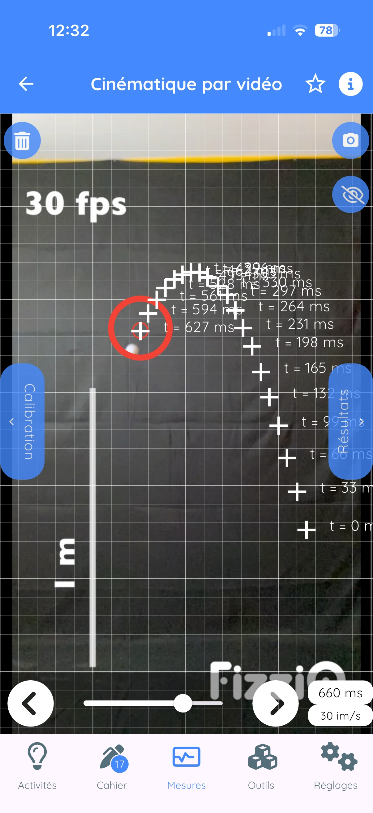
- Amenez la cible sur l'objet à pointer
- Appuyez sur l'écran pour enregistrer la position
- La vidéo passe à l'image suivante
- Répétez pour chaque image
Boutons de l'écran de pointage
| Bouton | Fonction |
|---|---|
| 🗑️ Poubelle | Supprimer toutes les références |
| 📷 Photo | Prendre une photo de la trajectoire |
| 👁️ Œil | Masquer/afficher les références |
| ◀ ▶ | Navigation dans la vidéo |
| Résultat | Voir les données calculées |
Étape 3 : Voir les résultats
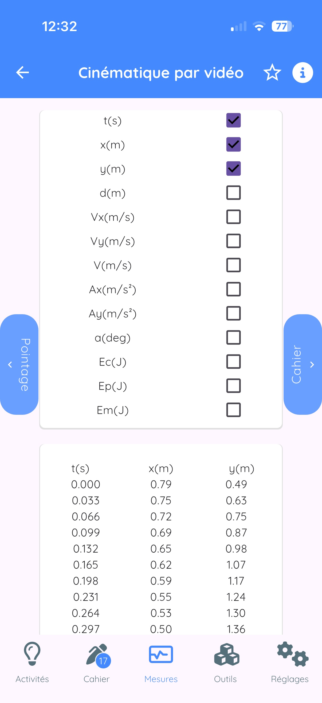
| Catégorie | Grandeurs | Description |
|---|---|---|
| Position | x, y | Position horizontale et verticale (m) |
| Vitesse | Vx, Vy, V | Composantes et norme (m/s) |
| Accélération | Ax, Ay, A | Composantes et norme (m/s²) |
| Rotation | α | Angle de rotation (°) |
| Énergie | (Ec, Ep, Em) | Énergies cinétique, potentielle, mécanique (J) |
Conseils pour une bonne analyse
- Utilisez un trépied pour stabiliser la caméra
- Filmez perpendiculairement au plan du mouvement
- Placez une règle ou objet de référence dans le champ
- Utilisez un fond contrasté
- Éclairez correctement la scène
11.3 Chronophotographie
Analyser une photo montrant plusieurs positions successives d'un objet.
Options d'accès
- Mes images : photo de votre galerie
- Librairie photo : chronophotographies pédagogiques
- Créer depuis vidéo : convertir une vidéo
11.4 Conversion vidéo → Chronophotographie
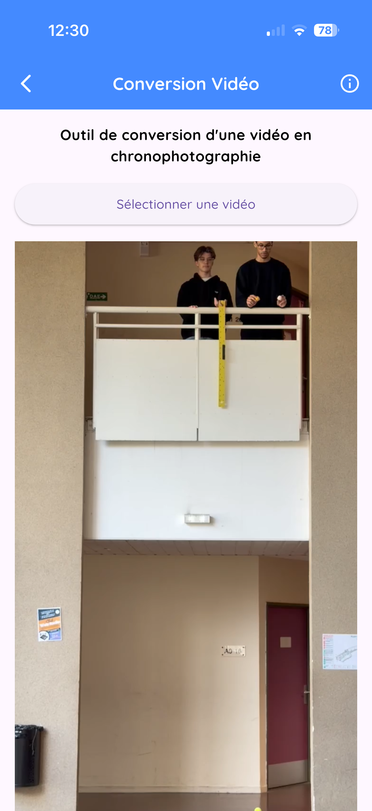
Accès
- Onglet Outils 🔧
- Appuyez sur Vidéo Chrono
Paramètres
| Paramètre | Description |
|---|---|
| Cadence (FPS) | Images par seconde |
| Intervalle | Prendre 1 image sur N (1 à 10) |
| Sensibilité | Détection du mouvement (1 à 100) |
12. Les outils d'expérimentation
12.1 Synthétiseur de sons

Principe
Le synthétiseur génère des ondes sinusoïdales pures et permet de superposer jusqu'à 3 voix simultanément.
Utilisation
- Boutons + et − : ajuster la fréquence (Hz)
- Bouton Play ▶️ : démarrer le son
- Bouton rouge 🔴 : arrêter
- Curseur de volume : ajuster l'intensité
Ajouter plusieurs voix
- Appuyez sur "Ajouter une autre voix"
- Pour chaque voix : fréquence, volume, déphasage
Créer des battements
- Ajoutez une deuxième voix
- Réglez deux fréquences légèrement différentes (ex: 440 Hz et 442 Hz)
- Fréquence des battements = |f₁ - f₂|
12.2 Bibliothèque de sons

Collection de sons calibrés prêts à l'emploi :
- Notes de musique et diapasons
- Sons pour l'effet Doppler
- Sons pour l'effet Shepard
- Bruits urbains, sirènes...
12.3 Synthèse des couleurs

Synthèse additive (RGB)
Trois curseurs : Rouge (R), Vert (G), Bleu (B) de 0 à 255.
Expériences
- R(255) + G(255) + B(0) = Jaune
- R(255) + G(0) + B(255) = Magenta
- R(0) + G(255) + B(255) = Cyan
- Tous à 255 = Blanc
- Tous à 0 = Noir
12.4 Chronomètre sonore
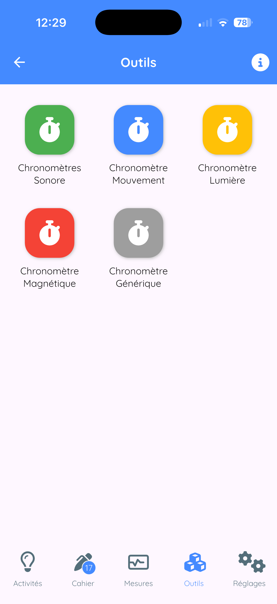
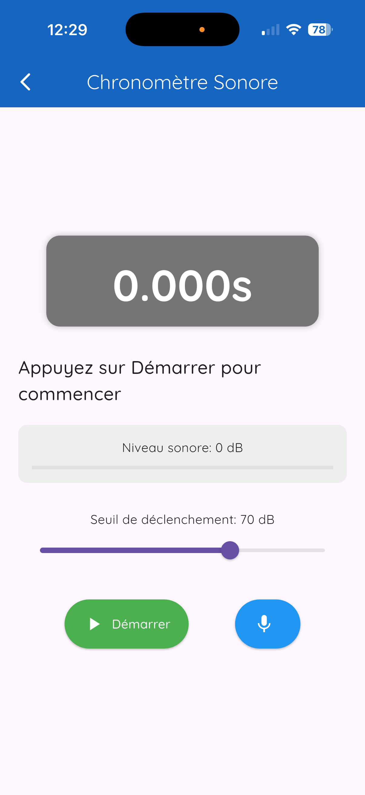
Principe
Mesurer automatiquement le temps entre deux événements sonores.
Utilisation
- Réglez la sensibilité (seuil de détection)
- Réglez le temps mort (éviter les rebonds)
- Appuyez sur Armer
- Premier son → le chronomètre démarre
- Second son → le chronomètre s'arrête
Types de chronomètres disponibles
| Chronomètre | Détection |
|---|---|
| Sonore | Sons (claquements, chocs...) |
| Mouvement | Accélération |
| Lumineux | Variations de lumière |
| Magnétique | Variations de champ magnétique |
12.5 Déclencheurs
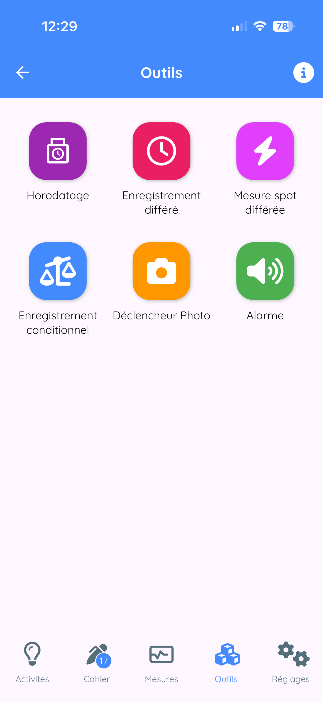
Actions possibles
- Mesure différée : prendre une mesure après un délai
- Enregistrement conditionnel : démarrer/arrêter selon une condition
- Capture automatique : déclencher une capture automatiquement
- Alarme : déclencher un signal sonore ou vibratoire
Types de conditions
- Temporel : après un délai défini
- Sonore : quand le son dépasse un seuil
- Mouvement : quand l'accélération dépasse un seuil
- Lumineux : quand la lumière change
- Magnétique : quand le champ magnétique varie
12.6 Calculatrice scientifique
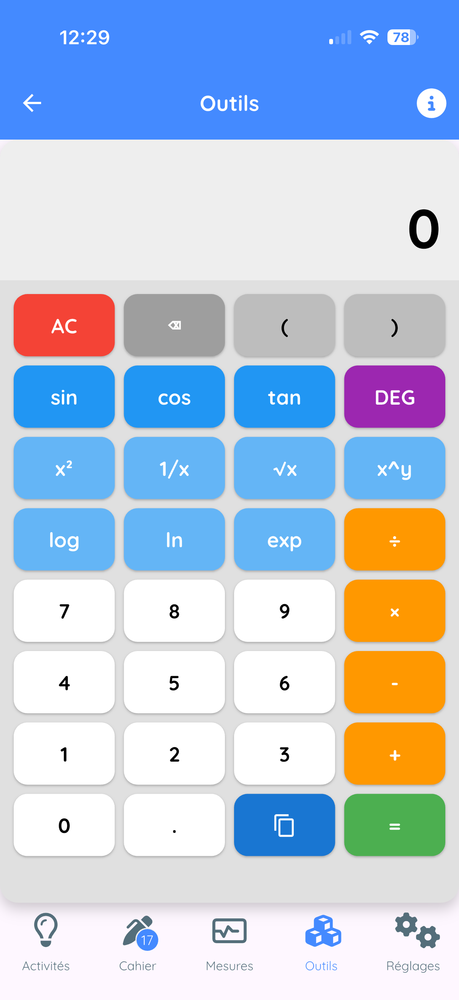
Fonctionnalités
- Opérations de base (+, -, ×, ÷, %)
- Fonctions trigonométriques (sin, cos, tan...)
- Logarithmes (ln, log)
- Exponentielles, puissances, racines
- Constantes (π, e)
- Modes degrés/radians
13. AskFizziQ - L'assistant IA
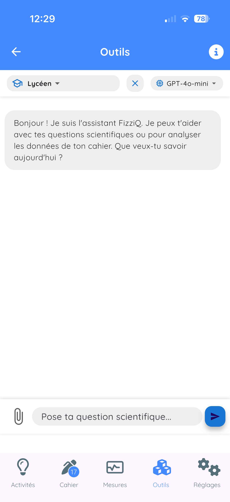
13.1 Accès
- Onglet Outils 🔧
- Appuyez sur AskFizziQ 🤖
13.2 Fonctionnalités
- Questions scientifiques : physique, chimie, SVT
- Aide à l'analyse : attachez des observations
- Suggestions d'expériences : protocoles guidés
13.3 Niveaux de réponse
| Mode | Caractéristiques |
|---|---|
| Collégien | Vocabulaire simple, analogies, 11-15 ans |
| Lycéen | Formules mathématiques, rigueur, 15-18 ans |
| Enseignant | Langage technique, suggestions pédagogiques |
13.4 Attacher des observations
- Appuyez sur l'icône trombone 📎
- Cochez les observations à attacher
- Validez
- Tapez votre question
- L'IA analyse vos données
13.5 Bonnes pratiques
- Posez des questions claires et précises
- Fournissez le contexte nécessaire
- Vérifiez les informations importantes
- Utilisez l'IA comme un outil d'aide
14. Capteurs Bluetooth externes
14.1 Connexion de microcontrôleurs
Vous pouvez connecter un Arduino ou micro:bit à FizziQ via Bluetooth Low Energy.
Format des données
nomCapteur:valeurExemples : tem:23.5 (température), hum:65 (humidité)
Préfixes reconnus
| Préfixe | Type | Unité |
|---|---|---|
| tem | Température | °C |
| hum | Humidité | % |
| ten | Tension | V |
| int | Intensité | A |
| pre | Pression | hPa |
| lum | Luminosité | lux |
| co2 | CO₂ | ppm |
| ph | pH | - |
Documentation complète : www.fizziq.org/connexion-de-capteurs-externes
14.2 FizziQ Connect
FizziQ Connect est un boîtier d'acquisition développé par l'équipe FizziQ, basé sur M5Stack.
Avantages
| Critère | FizziQ Connect | ExAO traditionnelle |
|---|---|---|
| Coût | Très réduit | Élevé |
| Logiciel | Gratuit (FizziQ) | Licence payante |
| Architecture | Ouverte (Grove, I2C) | Propriétaire |
| Appairage | Automatique | Configuration requise |
Le Mode Radio (innovation unique)
Diffuse les mesures vers tous les smartphones à proximité simultanément. Idéal pour les démonstrations en classe !
Sondes compatibles
- Température étanche (-55°C à +125°C)
- Thermomètre infrarouge (-70°C à +380°C)
- Capteur de lumière, distance, pH, CO₂...
- Ampèremètre (-4 à +4 A)
14.3 Connexion côté smartphone
- Dans l'écran Mesure, appuyez sur le nom de l'instrument
- Sélectionnez Capteurs externes
- Appuyez sur Rafraîchir
- Sélectionnez votre appareil
- Les capteurs sont automatiquement détectés
15. Export et partage
15.1 Export PDF
- Ouvrez la carte en plein écran
- Icône partager 📤
- Sélectionnez PDF
- Partagez ou enregistrez
15.2 Export CSV
Format texte universel compatible Excel, LibreOffice, Google Sheets.
- Icône partager 📤
- Sélectionnez CSV
15.3 Export d'images
Menu Partager > Image → capture PNG du graphique.
15.4 Fichiers FizziQ
- Format natif
.fizziq - Contient toutes les données
- Peut être rouvert dans FizziQ
15.5 Méthodes de partage
- Email, Messagerie (WhatsApp, Messenger...)
- AirDrop (iOS), Bluetooth
- Cloud (Google Drive, Dropbox, iCloud)
- QR Code (sans Internet)
16. Activités et QR Codes
16.1 Catalogue d'activités
Plus de 100 activités prêtes à l'emploi.


Niveaux de difficulté
| Niveau | Couleur | Public |
|---|---|---|
| Niveau 1 | 🟢 Vert | Collège |
| Niveau 2 | 🟠 Orange | Seconde / Première |
| Niveau 3 | 🔴 Rouge | Terminale / Supérieur |
Thèmes disponibles
Mécanique, Acoustique, Optique, Électricité, Thermodynamique...
16.2 Créer ses propres activités
- Onglet Activités → +
- Sélectionnez Créer un nouveau protocole
- Remplissez : titre, description, étapes
- Enregistrez
16.3 Partager une activité
- Ajouter au cahier
- Exporter en PDF
- Partager en QR code (limite : 1200 caractères)
16.4 Scanner un QR code d'activité
- Onglet Activités → +
- Sélectionnez Scanner un QR code
- Pointez la caméra vers le QR code
- L'activité est ajoutée automatiquement
17. Paramètres et personnalisation
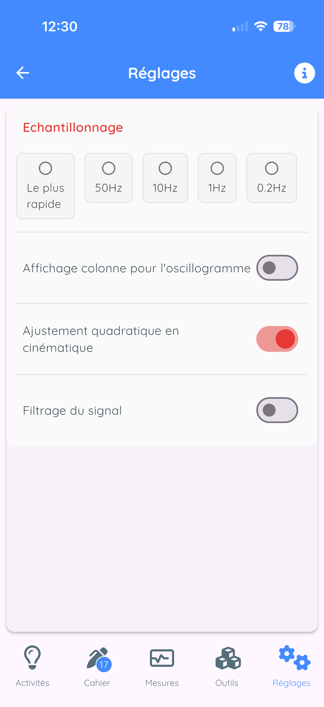
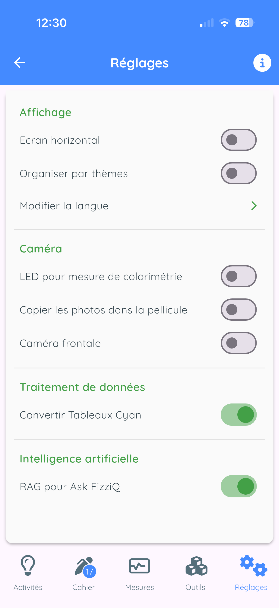
17.1 Données
| Paramètre | Description |
|---|---|
| Échantillonnage | Fréquence d'acquisition |
| Ajustement quadratique | Pour la cinématique (lycée) |
| Filtrage du signal | Lissage exponentiel (intensité 1-99) |
17.2 Paramètres de l'application
- Orientation écran : horizontal/vertical
- Organisation des capteurs : par instrument ou par thème
- Langue : 20 langues disponibles
17.3 Caméra
- LED pour colorimétrie : allume le flash
- Copier les photos : sauvegarde dans la galerie
- Caméra frontale : utilise la caméra selfie
17.4 Calibration

Magnétomètre
Effectuez des rotations en forme de 8 pour recalibrer la boussole.
Sonomètre
Utilisez le curseur pour appliquer un décalage en dB.
17.5 État du système

Affiche : capteurs détectés, version OS, modèle, version FizziQ.
18. Conseils et astuces
18.1 Optimiser les mesures
Accéléromètre
- Posez le téléphone sur une surface stable pour le zéro
- Fixez solidement le téléphone à l'objet en mouvement
- Utilisez un étui antichoc pour les impacts
Sonomètre
- Éloignez-vous des sources de bruit parasite
- Ne couvrez pas le microphone
- Calibrez avec un son de référence
Colorimètre
- Assurez un éclairage constant
- Évitez les reflets
- Utilisez un fond blanc
GPS
- Soyez en extérieur avec vue dégagée du ciel
- Attendez que la précision se stabilise
- Évitez les canyons urbains
18.2 Économiser la batterie
- Fermez FizziQ quand vous ne l'utilisez pas
- Réduisez la fréquence d'échantillonnage
- Désactivez le GPS quand non nécessaire
18.3 Organiser son cahier
- Donnez des titres explicites
- Ajoutez des notes textuelles
- Créez un cahier par thème
- Supprimez les mesures inutiles
18.4 Résolution des problèmes
| Problème | Solution |
|---|---|
| Capteur ne fonctionne pas | Vérifiez les autorisations, redémarrez l'app |
| Valeurs incorrectes | Calibrez le capteur, vérifiez l'orientation |
| Application plante | Mettez à jour, libérez la mémoire |
| Bluetooth ne trouve pas | Vérifiez que le capteur est allumé, rapprochez |
| GPS imprécis | Attendez en extérieur, vue dégagée du ciel |
Annexes
A. Raccourcis et gestes
| Geste | Action |
|---|---|
| Appui simple | Sélectionner |
| Appui long | Menu contextuel / Réorganiser |
| Balayage gauche | Supprimer |
| Pincement | Zoom arrière |
| Écartement | Zoom avant |
| Double appui | Réinitialiser le zoom |
| Glissement | Déplacer / Naviguer |
B. Formules utiles
Mécanique
- Vitesse moyenne : v = Δx / Δt
- Accélération : a = Δv / Δt
- Chute libre : h = ½gt²
- Pendule simple : T = 2π√(L/g)
Acoustique
- Vitesse du son : v = d/t (≈ 340 m/s dans l'air à 20°C)
- Fréquence : f = 1/T
- Battements : fbat = |f₁ - f₂|
C. Contact et ressources
- Site web : www.fizziq.org
- Protocoles : www.fizziq.org/activites
- Support : contact@fizziq.org